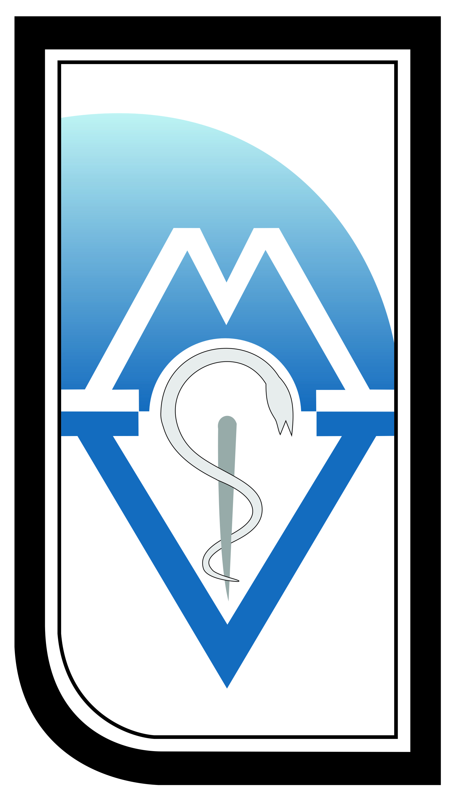

Call for Papers
The Organizing Committee of the 6th International Scientific Meeting "DAYS OF VETERINARY MEDICINE-2015" welcomes submission of original presentations and invites authors to submit original papers for oral or poster presentation.
This year two types of papers can be submitted:
ABSTRACTS
FULL PAPERS
General Information - only for submitting the ABSTRACT
It is recommended that the presenting author's contact details are used when submitting the abstract to avoid miscommunication regarding the abstract submission and review process
All abstracts must be submitted no later than June, 30 2015
All abstracts must be submitted in English
Abstracts are limited to 400 words
NOTE: Abstract published elsewhere (in a Journal as a part of full paper, chapter of a book, Proceedings or a Book of abstracts from another Meeting ect…) will not be acknowledged and published
Based on the review, your abstract will be categorized as one of the following:
ACCEPT:The abstract is accepted with only minor editing required at the discretion of the editor of the abstract
CORRECTION:The abstract needs correction. The authors are asked to send a corrected version as soon as possible. It is rejected unless the authors make satisfactory responses to all the reviewers' concerns
REJECT:Research not suitable or not an acceptable standard for this meeting
The Scientific Committee's decision cannot be appealed.
The abstracts will appear exactly as typed, therefore, please carefully follow the instructions below:
- The abstracts should be submitted in ENGLISH only
- On the top of the page indicate which type of presentation you prefer: oral or poster presentation
- The title must be typed in bold, but not capital letters
- Authors are urged to include their names in this particular order: first name, then middle name (if any) and surname as last
- The full name of institutions and subsidiary departments should be given, together with an useful address including postal code
- If several authors and institutions are listed, it should be clearly indicated which department and institution each author is affiliated with
- The affiliation address in each case should be indicated by superscript
- The name of the speaker-author must be followed by an asterisk (*)
- The abstracts must be laid out in terms of: Introduction-Material and Methods-Results-Conclusion
- Use "Times New Roman" typeface points 11
- The length of abstract should be 400 words and with no more than 5 key words
- The reception of the abstracts will be confirmed by email
All abstract submissions will be peer reviewed by reviewers selected by the Scientific Committee.
Upon receipt of your submission, an e-mail confirmation will be issued to the corresponding author. Authors can expect to receive e-mail confirmation of their submission within 72 hours (or three business days) after submission. If you do not receive a confirmation email from us within 72 hours (3 work days) of submitting your abstract, please contact us on: dvm2015@fvm.ukim.edu.mk.
Details related to accepted oral and poster presentations will be sent via email to the Submitting Author later.
All accepted abstracts, will be published in the special supplement issue of the International Scientific Journal "Macedonian Veterinary Review" (Mac Vet Rev 2015; 38, Suppl. No.1) which will serve as the official abstract publication of the 6th International Scientific Meeting "DAYS OF VETERINARY MEDICINE-2015".
If you want to submit FULL PAPER beside abstract, please consider this:
The full paper should be prepared according to the Journal's propositions (see Instruction for Authors on this link: Journal propositions.
The full paper will be peer-reviewed by the Journal's referees
The abstract of the full paper will appear in the International Scientific Journal "Macedonian Veterinary Review" (Mac Vet Rev 2015; Vol. 38, Suppl. No.1) which will serve as the official abstract publication of the 6th International Scientific Meeting "DAYS OF VETERINARY MEDICINE-2015".
Please download the full guide for Instruction to Authors or example of full paper published in the International Journal "Macedonian Veterinary Review".
NOTE: The Macedonian Veterinary Review is not obliged to accept papers for publication only upon congress attendance of their authors
All accepted full papers, will be published in the consequent issue of the International Scientific Journal "Macedonian Veterinary Review" (Mac Vet Rev Vol. 38 2015; Vol. 39 2016)..
ABSTRACT SUBMISSION
Please submit your abstract (in Word Document Format) in the form of an e-mail attachment to:
Only abstracts accompanied by the payment of the registration fee will be considered for reviewing, acceptance and inclusion in the Final Program.
The paper submition via fax is not acceptable.
FULL PAPER SUBMISSION
Please submit your full paper (in Word Document Format) in the form of an e-mail attachment to:

http://macvetrev.mk/manuscript.php
DEADLINES
-
Abstract Deadline (June 30, 2015)
-
Full Paper Deadline (June 30, 2015)
ORAL PRESENTATION
For stage presentation we will accept: 1. Powerpoint presentations only on English. 2. Video presentation (Color PAL system – VHS). 3. Powerpoint presentations must be submitted at least one hour before presentation.
POSTER PRESENTATION
- Poster size: 70 cm wide and 100 cm high.
- Lettering should be in dark, contrasting colors.
- Do not use combinations of red and green as these are difficult for people with common types of color blindness to read.
- Avoid using large tables of figures - try to use graphs instead.
- Include photographs and illustrations wherever possible.
- Keep the text to a minimum; avoid detailed description of well-known methods.
- If possible, prepare and make available some A4-size paper copies of the poster for interested participants.
- NO landscape posters will be displayed!
AUDIOVISUAL FASCILITIES
- For the Conference, video beam projections will be available in the conference room. Presentations should be prepared in "Power Point" (*.ppt file).
- For special audiovisual facilities, please send in advance a special request to the Organizing Committee, not later than September, 15th 2015.